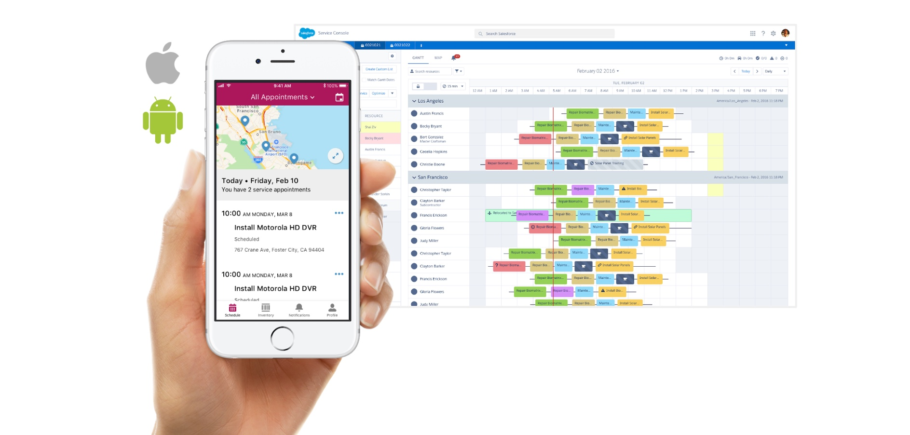

ABOUT TIME SHEETS
I’m a product designer on the Service Cloud design team at Salesforce. Currently, I am working on a product called Field Service Lightning (FSL). I have been very involved in new features on the FSL mobile app, including adding the ability for mobile workers to view and submit time sheets.
FIELD SERVICE LIGHTNING
FSL allows companies to benefit from the power of the Salesforce platform while managing their field service operations. Our customers use FSL to assign jobs to their mobile workers and help them manage their day-to-day operations.
The FSL mobile app, available for both iOS and Android, lets mobile technicians track their work orders and see all relevant information to get to their sites at the right time, and get up-to-speed on the tasks they need to complete.
Field Service Lightning Mobile App and Dispatcher Console
THE PROBLEM
Companies need to track how much time mobile workers spend on various tasks throughout the day in order to pay them and to bill their customers correctly. FSL already provides standard objects that Salesforce admins can use to keep track of time sheet data, but there is currently no out-of-the-box UI that supports this feature in our mobile app. The ability to manage time sheets is one of our top requests from customers.
THE DESIGN PROCESS
For this project, we considered how three of our personas had slightly different needs. Mobile workers need to track their time, and also ensure that they submit accurate time sheets. Managers need to review and approve time sheets. Admins need to configure FSL to match how their company handles time sheets.

Time Sheet User Scenarios
I first considered the time sheet feature as part of a quick visionary design exercise. The goal for this exercise was to get smart about user needs, and create alignment when discussing the feature.
I started by exploring other time tracking tools. I quickly began noticing common features, and also discovered key concepts such as wage codes (i.e. how time should be charged) and billing rates. I also noticed that time tracking was often bundled together with the ability to track expenses and produce invoices, which later turned out to be a common need for our customers as well.

Exploration of other time tracking tools
I understood time sheets in two parts: time tracking, and time sheet submission. I reached out to the other designers on my team for feedback on my early sketches, and then moved quickly into creating a mid-fi prototype that I could test with real field service mobile workers. Having a design to show during user testing helped guide the participants and helped reveal key research questions. In this design, I included the ability for a mobile worker to start and stop a clock to track their time. The mobile workers could also access their time sheets in the app, and submit them to their manager.

Sketching concepts for the visionary exercise in early 2017
I learned from our research that mobile workers really want to be able to manually edit what time is entered on their time sheet. They are frequently distracted by the task of going to a job site, and may forget to start or stop a clock. They didn’t want to feel like they were tied to a punch clock, or were being automatically tracked. The workers also pointed out that they often round their start or stop estimates to the nearest 15-minute mark, to avoid awkward numbers when billing customers.
Users were not a fan of the punch clock.
I was later joined by a new designer and a new PM. We worked together to develop a shared understanding of the problem by conducting discovery interviews, defining user flows, and iteratively designing a solution for the mobile experience. We then worked with our researcher to set up another round of user testing.
One of our research questions was how to best show a time sheet in the app. I had a hypothesis that users would want to see how much of their time was spent in overtime, which could be shown as a pie chart. Another idea was to show users their time represented as a bar chart of time worked per day. Users much preferred the bar chart, because it gave them a quick way to gauge whether any time was missing from the time sheet, and also aligned well with how they remembered spending their time.
Users preferred seeing their time as a bar chart
I made many prototypes throughout the course of this project. I used Principle to create the following prototype showing the experience for a mobile worker viewing their time sheets on the Android app.

Prototype made in Principle
REFLECTIONS
One thing that worked very well on that this project was that we maintained a shared, running document that we kept up-to-date, and that each person could reference throughout the design process. We maintained a Google Slides deck that we were ready to present at any time. This was immensely powerful in creating visibility, getting asynchronous feedback from stakeholders, and iterating quickly on designs.